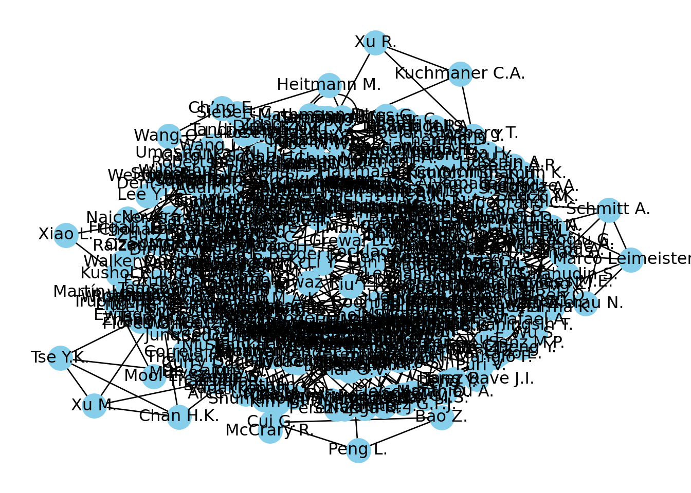

A focus on authors, articles, references with networks
Authors
Affiliation
Olivier Caron
Paris Dauphine - PSL
Christophe Benavent
Paris Dauphine - PSL
Published
October 17, 2023
1 Purpose
Code
cowsay::say("After researching the articles and references by making graphs tobetter visualize the structure of the research. We want to focushere on the authors, trying to understand how communities evolve over time.")
--------------
After researching the articles and references by making graphs to
better visualize the structure of the research. We want to focus
here on the authors, trying to understand how communities evolve over time.
--------------
\
\
\
|\___/|
==) ^Y^ (==
\ ^ /
)=*=(
/ \
| |
/| | | |\
\| | |_|/\
jgs //_// ___/
\_)
We need to check if there are more than one unique authorname per authid. If so, we need to change the different names of author to the same name in order to have the exact same node per author later in the network.
Code
test <- list_articles %>%group_by(authid) %>%select(authid, authname, entry_number) %>%mutate(n =n())result <- test %>%group_by(authid) %>%filter(n_distinct(authname) >1) %>%distinct(authid, .keep_all =TRUE)result %>%reactable()
Code
number_duplicates <-nrow(result)cat("There are ", number_duplicates, " authors registered with different names.")
There are 25 authors registered with different names.
2.3 Correct the duplicate names
Let’s correct that by using one property of the distinct function: the .keep_all = TRUE parameter. It keeps the first occurrence of each group, which is the first row encountered for each unique combination of authid and authname. It will be faster than manually changing the name of each author.
Code
# Merge list_articles with result on the authid columnmerged_df <-left_join(list_articles, result, by ="authid")# Replace authname values in list_articles with those from resultlist_articles$authname <-ifelse(!is.na(merged_df$authname.y), merged_df$authname.y, list_articles$authname)# Keep only marketing articles and filter "Erratum" type of publications (=correction)list_articles <- list_articles %>%filter(marketing ==1) %>%filter(subtypeDescription !="Erratum")cat("There are", n_distinct(list_articles$entry_number), "articles and", n_distinct(list_articles$authname), "authors overall in the data.")
There are 404 articles and 976 authors overall in the data.
Code
# Write the updated dataframe to a CSV file write_csv2(list_articles, "nlp_full_data_final_unique_author_names.csv")
It is now done. We can check again if there are more than one unique authorname per authid.
2.4 Verification of duplicate names
Code
test <- list_articles %>%group_by(authid) %>%select(authid, authname, entry_number) %>%mutate(n =n())result <- test %>%group_by(authid) %>%filter(n_distinct(authname) >1) %>%distinct(authid, .keep_all =TRUE) %>%relocate(entry_number)result %>%reactable()
It’s alright, we can now continue on constructing the data frames for the networks.
3 Construct the dataframes for the networks
3.1 Create the dataframes of collaboration between authors (one per period)
Code
list_articles = pd.read_csv("nlp_full_data_final_unique_author_names.csv", sep=';', decimal=',')# Define the year rangesyear_ranges = [(None, 2013), (2013, 2017), (2018, 2021), (2022, 2023)]# Initialize a list to store the results for each year periodresult_dfs = []# Iterate through the year rangesfor start_year, end_year in year_ranges:if start_year isNone:# Filter articles before 2013 filtered_articles = list_articles[list_articles['year'] < end_year]else:# Filter articles within the specified year range filtered_articles = list_articles[(list_articles['year'] >= start_year) & (list_articles['year'] <= end_year)]# Create a list to store author pairs and their details for the current year period author_pairs = []# Group the filtered dataframe by article number and collect unique author IDs for each article grouped = filtered_articles.groupby('entry_number')[['authid', 'authname']].agg(list).reset_index()# Iterate through the grouped dataframe and find author pairs for each articlefor _, row in grouped.iterrows(): entry_number = row['entry_number'] authors = row['authid'] authnames = row['authname']iflen(authors) ==1:# Handle single authors by creating a self-relation author_pairs.append((entry_number, authors[0], authors[0], authnames[0], authnames[0]))eliflen(authors) >1:# Create pairs of authors who have co-authored the article author_combinations =list(combinations(range(len(authors)), 2))for i, j in author_combinations: author_pairs.append((entry_number, authors[i], authors[j], authnames[i], authnames[j]))# Create the DataFrame with the additional 'entry_number' column for the current year period result_df = pd.DataFrame(author_pairs, columns=['entry_number', 'authid1', 'authid2', 'authname1', 'authname2'])# Append the result DataFrame to the list of results result_dfs.append(result_df)# Now, result_dfs contains DataFrames for each year period# result_dfs[0] corresponds to articles before 2013# result_dfs[1] corresponds to articles from 2013 to 2017# result_dfs[2] corresponds to articles from 2018 to 2021# result_dfs[3] corresponds to articles from 2022 to 2023authors_before_2013 = result_dfs[0]authors_2013_2017 = result_dfs[1]authors_2018_2021 = result_dfs[2]authors_2022_2023 = result_dfs[3]
3.2 Sort cases with a->b and b->a and create weighted edges
Code
# Sort the cases with a->b and b->a and sum them up => it creates weighted edgesdef get_collaboration_df(df): collaboration_df = df[["authname1","authname2"]] collaboration_df = pd.DataFrame(np.sort(collaboration_df.values, axis=1), columns=collaboration_df.columns) collaboration_df['value'] =1 collaboration_df = collaboration_df.groupby(["authname1","authname2"], sort=False, as_index=False).sum()return collaboration_df# Apply the function to DataFramesnetwork_data_2022_2023 = get_collaboration_df(authors_2022_2023)network_data_2022_2023.to_csv("networks/csv/network_data_2022_2023.csv")network_data_2018_2021 = get_collaboration_df(authors_2018_2021)network_data_2018_2021.to_csv("networks/csv/network_data_2018_2021.csv")network_data_2013_2017 = get_collaboration_df(authors_2013_2017)network_data_2013_2017.to_csv("networks/csv/network_data_2013_2017.csv")network_data_before_2013 = get_collaboration_df(authors_before_2013)network_data_before_2013.to_csv("networks/csv/network_data_before_2013.csv")
3.3 Get information about authors
Code
def sort_dict(dict): sorted_dict = {k: v for k, v insorted(dict.items(), key=lambda item: item[0])}return sorted_dictdef get_author_info_by_period(list_articles, period):# Filter the DataFrame based on the specified periodif period =="before-2013": filtered_df = list_articles[list_articles['year'] <2013]elif period =="2013-2017": filtered_df = list_articles[(list_articles['year'] >=2013) & (list_articles['year'] <=2017)]elif period =="2018-2021": filtered_df = list_articles[(list_articles['year'] >=2018) & (list_articles['year'] <=2021)]elif period =="2022-2023": filtered_df = list_articles[(list_articles['year'] >=2022) & (list_articles['year'] <=2023)]else:raiseValueError("Invalid period parameter. Please choose one of: 'before-2013', '2013-2017', '2018-2021', '2022-2023")# Create a dictionary to store affiliations and countries for each author info_author = {'affiliation': {}, 'country': {}, 'article': {}, 'journal': {}}# Iterate through the filtered DataFrame to collect affiliations and countries for each authorfor index, row in filtered_df.iterrows(): author_name = row['authname'] affiliation = row['affilname'] country = row['affiliation_country'] article = row['dc:title'] journal = row['prism:publicationName']# Check if the affiliation is not NaN (i.e., a valid affiliation)ifisinstance(affiliation, str) and affiliation.strip() !="":# Check if the author already has an affiliation, and if the new one is not already included, then add it with "&"if author_name in info_author['affiliation']:if affiliation notin info_author['affiliation'][author_name]: info_author['affiliation'][author_name] +=" | "+ affiliationelse: info_author['affiliation'][author_name] = affiliation# Check if the country is not NaN (i.e., a valid country)ifisinstance(country, str) and country.strip() !="":# Check if the author already has a country, and if the new one is not already included, then add it with "&"if author_name in info_author['country']:if country notin info_author['country'][author_name]: info_author['country'][author_name] +=" | "+ countryelse: info_author['country'][author_name] = country# Check if the article title is not NaN (i.e., a valid article title)ifisinstance(article, str) and article.strip() !="":# Check if an author has multiple articles, if so add the new article with "&"if author_name in info_author['article']:if article notin info_author['article'][author_name]: info_author['article'][author_name] +=" | "+ articleelse: info_author['article'][author_name] = article# Check if the journal name (or conference name) is not NaN (i.e., a valid journal)ifisinstance(journal, str) and journal.strip() !="":# Check if the author has published in multiple journals, if so add the new journal with "&"if author_name in info_author['journal']:if journal notin info_author['journal'][author_name]: info_author['journal'][author_name] +=" | "+ journalelse: info_author['journal'][author_name] = journal# Create a dictionary that associates each author with their ln(total number of citations+1)+1# We do +1 twice because if the result is 0, then the log is undefined.# We add another +1 to avoid having 0 values in the network. citedby_dict = filtered_df.groupby('authname')['citedby_count'].sum() .to_dict()#citedby_dict = filtered_df.groupby('authname')['citedby_count'].sum().apply(lambda x: np.log(x + 1) + 1).to_dict()# Add the 'citedby_count' dictionary to the 'info_author' dictionary under the key 'citations' info_author['citations'] = citedby_dict# Return the info_author dictionary containing both affiliation, country, and citations informationreturn info_author# How to use:# Specify the period of interest: ("before-2013", "2013-2017", "2018-2021", or "2022-2023")# The function returns a dictionary with four keys: 'affiliation', 'country', 'article', 'journal', and 'citations'# The dictionaries are then used as attributes for the nodes in the network (see below)affilauthor_before_2013 = sort_dict(get_author_info_by_period(list_articles, "before-2013")['affiliation'])affilauthor_2013_2017 = sort_dict(get_author_info_by_period(list_articles, "2013-2017")['affiliation'])affilauthor_2018_2021 = sort_dict(get_author_info_by_period(list_articles, "2018-2021")['affiliation'])affilauthor_2022_2023 = sort_dict(get_author_info_by_period(list_articles, "2022-2023")['affiliation'])countryauthor_before_2013 = sort_dict(get_author_info_by_period(list_articles, "before-2013")['country'])countryauthor_2013_2017 = sort_dict(get_author_info_by_period(list_articles, "2013-2017")['country'])countryauthor_2018_2021 = sort_dict(get_author_info_by_period(list_articles, "2018-2021")['country'])countryauthor_2022_2023 = sort_dict(get_author_info_by_period(list_articles, "2022-2023")['country'])citations_before_2013 = sort_dict(get_author_info_by_period(list_articles, "before-2013")['citations'])citations_2013_2017 = sort_dict(get_author_info_by_period(list_articles, "2013-2017")['citations'])citations_2018_2021 = sort_dict(get_author_info_by_period(list_articles, "2018-2021")['citations'])citations_2022_2023 = sort_dict(get_author_info_by_period(list_articles, "2022-2023")['citations'])article_before_2013 = sort_dict(get_author_info_by_period(list_articles, "before-2013")['article'])article_2013_2017 = sort_dict(get_author_info_by_period(list_articles, "2013-2017")['article'])article_2018_2021 = sort_dict(get_author_info_by_period(list_articles, "2018-2021")['article'])article_2022_2023 = sort_dict(get_author_info_by_period(list_articles, "2022-2023")['article'])journal_before_2013 = sort_dict(get_author_info_by_period(list_articles, "before-2013")['journal'])journal_2013_2017 = sort_dict(get_author_info_by_period(list_articles, "2013-2017")['journal'])journal_2018_2021 = sort_dict(get_author_info_by_period(list_articles, "2018-2021")['journal'])journal_2022_2023 = sort_dict(get_author_info_by_period(list_articles, "2022-2023")['journal'])
4 Co-authorship networks
Code
G = nx.from_pandas_edgelist(network_data_2022_2023, 'authname1', 'authname2', edge_attr='value', create_using=nx.Graph())
4.1 Network basic visualization
This is a basic visualization done with the NetworkX library and matplotlib.
Code
```{python}#| label: network-visualization#| fig-cap: Visualization of the co-authorship network for the 2022-2023 period, created using NetworkX and matplotlib.#| fig-align: centerplt.figure(figsize=(20,20))pos = nx.kamada_kawai_layout(G)nx.draw(G, with_labels=True, node_color='skyblue', edge_cmap=plt.cm.Blues, pos=pos)```
<Figure size 2000x2000 with 0 Axes>

Visualization of the co-authorship network for the 2022-2023 period, created using NetworkX and matplotlib.
Caution
This is not interactive and the result is not enlightening at all. We then decide to use Pyvis to create an interactive visualization.
4.2 Network visualization with Pyvis
Tip
Pyvis enables us to create interactive visualizations and modify the network layout in real time with the net.show_buttons(filter_=['physics']) command. This button then generates options to include in our code by using the net.set_options() function. More information here.
```{python}#| label: community-detection-louvain#| output: falseimport community as community_louvain# Compute the best partitioncommunities = community_louvain.best_partition(G)#dftest = pd.DataFrame(list(communities.items()), columns=['authname', 'community'])nx.set_node_attributes(G, communities, 'group')```
4.4 Network visualization with ipysigma (Plique 2022)
4.4.1 A function to graph them all
Code
def sigma_graph(dataframe, year_period):# Create a graph from the given dataframe G = nx.from_pandas_edgelist(dataframe, 'authname1', 'authname2', edge_attr='value', create_using=nx.Graph())# Set edge colors for visualizationfor u, v in G.edges: G[u][v]["color"] ="#7D7C7C"# Calculate the degree of each node node_degree =dict(G.degree)# Compute multiple centrality metrics for nodes node_degree_centrality = nx.degree_centrality(G) node_degree_betweenness = nx.betweenness_centrality(G) node_degree_closeness = nx.closeness_centrality(G) node_degree_eigenvector = nx.closeness_centrality(G) node_degree_constraint_weighted = nx.constraint(G, weight="value") node_degree_constraint_unweighted = nx.constraint(G)# Set node attributes for various metrics nx.set_node_attributes(G, node_degree_centrality, 'centrality') nx.set_node_attributes(G, node_degree_betweenness, 'betweenness') nx.set_node_attributes(G, node_degree_closeness, 'closeness') nx.set_node_attributes(G, node_degree_eigenvector, 'eigenvector centrality') nx.set_node_attributes(G, node_degree_constraint_weighted, 'burt\'s constraint weighted') nx.set_node_attributes(G, node_degree_constraint_unweighted, 'burt\'s constraint unweighted')# Mapping of variables based on the provided 'year_period' affilauthor_mapping = {"before-2013": affilauthor_before_2013,"2013-2017": affilauthor_2013_2017,"2018-2021": affilauthor_2018_2021,"2022-2023": affilauthor_2022_2023 } countryauthor_mapping = {"before-2013": countryauthor_before_2013,"2013-2017": countryauthor_2013_2017,"2018-2021": countryauthor_2018_2021,"2022-2023": countryauthor_2022_2023 } citations_mapping = {"before-2013": citations_before_2013,"2013-2017": citations_2013_2017,"2018-2021": citations_2018_2021,"2022-2023": citations_2022_2023 } article_mapping = {"before-2013": article_before_2013,"2013-2017": article_2013_2017,"2018-2021": article_2018_2021,"2022-2023": article_2022_2023 } journal_mapping = {"before-2013": journal_before_2013,"2013-2017": journal_2013_2017,"2018-2021": journal_2018_2021,"2022-2023": journal_2022_2023 }# Set node attributes based on the selected 'year_period'# They appear in the graph in the same order they are added nx.set_node_attributes(G, affilauthor_mapping[year_period], 'affiliation') nx.set_node_attributes(G, countryauthor_mapping[year_period], 'country') nx.set_node_attributes(G, article_mapping[year_period], 'articles') nx.set_node_attributes(G, journal_mapping[year_period], 'journals') nx.set_node_attributes(G, citations_mapping[year_period], 'citations') nx.set_node_attributes(G, node_degree_constraint_weighted, 'burt\'s constraint weighted') nx.set_node_attributes(G, node_degree_constraint_unweighted, 'burt\'s constraint unweighted')# Construct the sigma graph and customize visualization Sigma.write_html(G, node_metrics={"community": {"name": "louvain", "resolution": 1}}, # Specify node metrics. increase resolution to have more communities edge_size="value", # Set edge size node_color="community", # Set node colors path=f"networks/authors/{year_period}_sigma.html", # Specify the output file path fullscreen=True, # Display in fullscreen mode start_layout=3, # Start the layout algorithm automatically and lasts 3 seconds max_categorical_colors=10, # Max categorical colors for communities label_density=2, # Increase this to have more labels appear, it is also possible to display all labels node_size_range=(3, 20), # Set node size range default_edge_type="curve", # Set default edge type label_font="Helvetica Neue", # Set label font node_label_size="citations", # Set node label size#node_border_color="black", # Set node border color#edge_color="source", # Set edge color from 'source' attribute node_border_color_from='node', # Set node border color from 'node' attribute node_size="citations", # Set node size based on 'citations' attribute node_label_size_range=(12, 25)# node_label_color="community" # Set node label color based on 'community' attribute )return G
4.4.2 Co-authorship network for the 2022-2023 period
Code
import randomimport community as community_louvain# Fix the seed for reproducibilityrandom.seed(42)G_2022_2023 = sigma_graph(network_data_2022_2023, '2022-2023')#detect how many commmunities there are in the graphcommunities = community_louvain.best_partition(G_2022_2023)print("There are {} communities in the 2022-2023 network".format(len(set(communities.values()))))
There are 132 communities in the 2022-2023 network
Code
#print("The density of the graph is {}".format(round(nx.density(G_2022_2023), 6)))test_value = nx.constraint(G_2022_2023, nodes=None, weight="value")test_novalue = nx.constraint(G_2022_2023, nodes=None, weight=None)
4.4.3 Co-authorship network for the 2018-2021 period
Code
G_2018_2021 = sigma_graph(network_data_2018_2021, '2018-2021')#print("The density of the graph is {}".format(nx.density(G_2018_2021))communities = community_louvain.best_partition(G_2018_2021)print("There are {} communities in the 2018-2021 network".format(len(set(communities.values()))))
There are 117 communities in the 2018-2021 network
4.4.4 Co-authorship network for the 2013-2017 period
Code
G_2013_2017 = sigma_graph(network_data_2013_2017, '2013-2017')#print("The density of the graph is {}".format(nx.density(G_2013_2017))communities = community_louvain.best_partition(G_2013_2017)print("There are {} communities in the 2013-2017 network".format(len(set(communities.values()))))
There are 41 communities in the 2013-2017 network
4.4.5 Co-authorship network before 2013
Code
G_before_2013 = sigma_graph(network_data_before_2013, 'before-2013')communities = community_louvain.best_partition(G_before_2013)print("There are {} communities in the before-2013 network".format(len(set(communities.values()))))
There are 24 communities in the before-2013 network
4.5 An interesting metric: the graph density
The graph density is the ratio of the number of edges to the maximum number of possible edges. It is a measure of the proportion of edges present in a graph. A graph with a high density has a large number of edges compared to the number of nodes. A graph with a low density has a small number of edges compared to the number of nodes.
A more formal definition is given here by the following formulas:
where \(n\) is the number of nodes and \(m\) is the number of edges in the graph.
From an interpretation standpoint, we can appreciate the density in the graphs bellow as follows:
\(d\)
Interpretation
Close to \(0\)
The collaborative relationships among authors are sparse:
Authors have limited connections with each other outside of their community.
Scientific papers are primarily the work of individual authors or small isolated groups.
Close to \(1\)
Authors frequently collaborate with one another, leading to a web of interconnected scientific collaborations.
Scientific papers often involve contributions from multiple authors, reflecting a high level of teamwork and interdisciplinary research.
Collaborations are a significant aspect of the research process in this marketing field, and authors actively seek out opportunities to work together.
The network of collaborations is well-established and robust, facilitating the exchange of ideas and the advancement of scientific knowledge.
4.5.1 Evolution of the graphs’ density
Code
# Create a dataframe with the density of each graphdensity_df = pd.DataFrame({'period': ['before-2013', '2013-2017', '2018-2021', '2022-2023'],'density': [nx.density(G_before_2013), nx.density(G_2013_2017), nx.density(G_2018_2021), nx.density(G_2022_2023)]})
Code
library(reticulate)library(Hmisc)# Load the 'density_df' dataframe from Python using reticulatetesttransfer <- py$density_df# Specify the order of categories for the 'period' columntesttransfer$period <-factor(testtransfer$period, levels =c('before-2013', '2013-2017', '2018-2021', '2022-2023'))# Use the 'gt()' function to display the dataframetesttransfer %>%rename_all(Hmisc::capitalize) %>%gt() %>%tab_style(style =cell_text(weight ="bold", align ="center"),locations =cells_column_labels() )
Period
Density
before-2013
0.032145353
2013-2017
0.019327731
2018-2021
0.007211802
2022-2023
0.006184432
Code
# Create the Plotly graphfig <-plot_ly(testtransfer, x =~period, y =~density, type ='scatter', mode ='lines+markers', text =~paste("Period=", period, "<br>Density=", density), hoverinfo ="text")# Show the graphfig <- fig %>%layout(template ="plotly_white")fig
5 Citations networks
Let’s now dive into the exploration of citation networks. We’ll be employing the same approach that we used for analyzing co-authorship networks across different time periods.
In this new investigation, our primary aim remains the acquisition of valuable insights into the ever-evolving landscape of research in marketing using NLP methods.
This research is motivated by the convergence of two critical factors:
The advent of novel tools and techniques that facilitate the analysis of large data volumes ;
The proliferation and the availability of open and private data from various sectors.
While our prior work focused on uncovering emerging research topics, our current emphasis shifts towards comprehending which papers have garnered the most attention. We seek to determine whether it is predominantly computer science papers that have inspired marketing scholars with new perspectives into data analysis or if marketing papers have also played a role in advocating the development of new theories.
5.1 Data preparation and summary
We’ll start by loading the data of references and preparing it for the analysis.
Code
# Load the data of referenceslist_references <-read_csv2('nlp_references_final_18-08-2023.csv')list_references <- list_references %>%select(1:32) %>%mutate(citing_art =str_sub(citing_art, 11)) %>%rename(scopus_id =`scopus-id`) %>%relocate(scopus_id, .after = citing_art) %>%mutate(year =as.character(str_sub(`prism:coverDate`, 1, 4))) %>%select(-`prism:coverDate`)skim(list_references)
There are some problems with the data that we need to address before proceeding with the analysis. Some scopus_id identifiers (the id of the reference that appears in our marketing NLP corpus articles) have multiple different values of title (even only minor differences), sourcetitle, etc. although they should be equal. We want to plot the networks with information about the nodes. One unique node should have one unique value for each variable.
Code
list_references = r.list_references# Group by 'scopus_id' and count the unique number of 'title' for each 'scopus_id'title_counts = list_references.groupby('scopus_id')['title'].nunique()# Find the 'scopus_id' that have more than one associated titleinconsistent_scopus_id = title_counts[title_counts >1].index.tolist()year_counts = list_references.groupby('scopus_id')['year'].nunique()inconsistent_scopus_id_year = year_counts[title_counts >1].index.tolist()inconsistent_scopus_id_year
list_inconsistencies <- list_references %>%filter(scopus_id %in% py$inconsistent_scopus_id) %>%#we take the inconsistent scopus_id from python by using reticulateselect(scopus_id, citing_art, title, sourcetitle, year, `author-list.author.ce:indexed-name`)reactable( list_inconsistencies,striped =TRUE,groupBy ="scopus_id",defaultColDef =colDef(minWidth =100, maxWidth =200), # Adjust these values as neededcolumns =list(title =colDef(minWidth =250) # Adjust this value based on the length of your titles ))
5.1.3 Correct inconsistencies
We correct inconsistencies in the data. Some scopus_id identifiers have multiple different values of title, sourcetitle, authorname, etc. (even only minor differences). For data consistency and future plot of networks, we need to have only one unique value for each variable of scopus_id.
Code
def standardize_values(df, groupby_column, value_column):""" Standardize the values of the specified column based on the most frequent non-empty value and fewest characters within each group. Parameters: - df: DataFrame - groupby_column: The column by which we group data. - value_column: The column whose values we want to standardize based on the rules. Returns: - DataFrame with standardized values. """def custom_mode(series):# Remove NA values and other representations of NA series = series.dropna() series = series[~series.isin(['', 'NA'])]# If all values were NA or emptyif series.empty:return np.nan # Using numpy's nan for consistency# Get value counts counts = series.value_counts()# If there's a single most common value, return itiflen(counts) ==1or counts.iloc[0] != counts.iloc[1]:return counts.idxmax()# If multiple values have the same max count, apply further rules top_values = counts[counts == counts.iloc[0]].index.tolist()# Sort by fewest characters sorted_by_chars =sorted(top_values, key=lambda x: len(x))# If there's a single value with the fewest characters, return itiflen(sorted_by_chars) ==1orlen(sorted_by_chars[0]) !=len(sorted_by_chars[1]):return sorted_by_chars[0]# If the column is not the author's name, apply the uppercase letter rule.if value_column !="author_name": # adjust "author_name" to the correct column name if necessaryreturnsorted(sorted_by_chars, key=lambda x: sum(1for c in x if c.isupper()), reverse=True)[0]else:return sorted_by_chars[0]# Find the most common value for each group based on the custom mode most_common_value = df.groupby(groupby_column)[value_column].apply(custom_mode).to_dict()# Map the most common values to the dataframe based on the group df[value_column] = df[groupby_column].map(most_common_value)return df# Usage example:list_references_standardized = standardize_values(list_references, 'scopus_id', 'title')list_references_standardized = standardize_values(list_references_standardized, 'scopus_id', 'sourcetitle')list_references_standardized = standardize_values(list_references_standardized, 'scopus_id', 'author-list.author.ce:indexed-name')
5.1.4 Check inconsistencies
We check that the inconsistencies have been corrected.
Code
check_inconsistencies <- py$list_references_standardized %>%filter(scopus_id %in% py$inconsistent_scopus_id) %>%#we take the inconsistent scopus_id from python by using reticulateselect(scopus_id, citing_art, title, sourcetitle, year, `author-list.author.ce:indexed-name`)reactable( check_inconsistencies,groupBy ="scopus_id",defaultColDef =colDef(minWidth =100, maxWidth =200), # Adjust these values as neededcolumns =list(title =colDef(minWidth =250) # Adjust this value based on the length of your titles ))
6 Construct the dataframes
Code
def get_citations_df(df, start_year, end_year):# Filtrer les données en fonction de la colonne 'year' df_filtered = df[df['year'].between(start_year, end_year)]# Extraire les colonnes nécessaires pour le réseau de citations citations_df = df_filtered[['citing_art', 'scopus_id', 'sourcetitle', 'title', 'citedby-count', 'author-list.author.ce:indexed-name', 'year']]return citations_df
---title: "Systematic literature review"bibliography: references.bibtitle-block-banner: truesubtitle: "A focus on authors, articles, references with networks"author: - name: Olivier Caron email: olivier.caron@dauphine.psl.eu affiliations: name: "Paris Dauphine - PSL" city: Paris state: France - name: Christophe Benavent email: christophe.benavent@dauphine.psl.eu affiliations: name: "Paris Dauphine - PSL" city: Paris state: Francedate : "last-modified"toc: truenumber-sections: truenumber-depth: 10format: html: theme: light: yeti #dark: darkly code-fold: true code-summary: "Display code" code-tools: true #enables to display/hide all blocks of code code-copy: true #enables to copy code grid: body-width: 1000px margin-width: 100px toc: true toc-location: leftexecute: echo: true warning: false message: falseeditor: visualfig-align: "center"highlight-style: ayucss: styles.cssreference-location: margin---## Purpose```{r}#| label: introductioncowsay::say("After researching the articles and references by making graphs tobetter visualize the structure of the research. We want to focushere on the authors, trying to understand how communities evolve over time.")```## Libraries and preparing data```{python}#| label: load-libraries-python#| echo: false#Librariesimport pandas as pdimport numpy as npimport networkx as nximport matplotlib.pyplot as pltimport plotly.express as pxfrom ipysigma import Sigmafrom itertools import combinations#Datadata = pd.read_csv("data_final.csv")list_articles = pd.read_csv("nlp_full_data_final_18-08-2023.csv", sep=';', decimal=',')list_articles = list_articles[list_articles['marketing'] ==1] #only marketing articles# Merge the "topic" and "topic_name" columns from the "data" dataframe into "list_articles"list_articles = list_articles.merge(data[['entry_number', 'topic', 'topic_name']], on='entry_number', how='left')list_references = pd.read_csv("nlp_references_final_18-08-2023.csv", sep=';', decimal=',')```### Summary of the authors data```{r}#| label: summary-authors-data#| column: screen-inset-right#| echo: fencedlibrary(tidyverse)library(reactable)library(gt)library(skimr)library(plotly)list_articles <-read_csv2("nlp_full_data_final_18-08-2023.csv") %>%mutate(marketing =as.logical(marketing)) %>%mutate(authid =as.character(authid)) %>%mutate(afid =as.character(afid)) %>%mutate(entry_number =as.character(entry_number)) %>%mutate(source_id =as.character(source_id)) %>%mutate(article_number =as.character(article_number)) %>%mutate(openaccess =as.logical(openaccess))skim(list_articles) #%>%#filter(!skim_type %in% c("logical"))```### Check name of authorsWe need to check if there are more than one unique `authorname` per `authid`. If so, we need to change the different names of author to the same name in order to have the exact same node per author later in the network.```{r}#| label: load-libraries-rtest <- list_articles %>%group_by(authid) %>%select(authid, authname, entry_number) %>%mutate(n =n())result <- test %>%group_by(authid) %>%filter(n_distinct(authname) >1) %>%distinct(authid, .keep_all =TRUE)result %>%reactable()number_duplicates <-nrow(result)cat("There are ", number_duplicates, " authors registered with different names.")```### Correct the duplicate namesLet's correct that by using one property of the distinct function: the `.keep_all = TRUE` parameter. It keeps the first occurrence of each group, which is the first row encountered for each unique combination of `authid` and `authname`. It will be faster than manually changing the name of each author.```{r}#| label: change-data-authors# Merge list_articles with result on the authid columnmerged_df <-left_join(list_articles, result, by ="authid")# Replace authname values in list_articles with those from resultlist_articles$authname <-ifelse(!is.na(merged_df$authname.y), merged_df$authname.y, list_articles$authname)# Keep only marketing articles and filter "Erratum" type of publications (=correction)list_articles <- list_articles %>%filter(marketing ==1) %>%filter(subtypeDescription !="Erratum")cat("There are", n_distinct(list_articles$entry_number), "articles and", n_distinct(list_articles$authname), "authors overall in the data.")# Write the updated dataframe to a CSV file write_csv2(list_articles, "nlp_full_data_final_unique_author_names.csv")```It is now done. We can check again if there are more than one unique `authorname` per `authid`.### Verification of duplicate names```{r}#| label: check-unique-name-authorstest <- list_articles %>%group_by(authid) %>%select(authid, authname, entry_number) %>%mutate(n =n())result <- test %>%group_by(authid) %>%filter(n_distinct(authname) >1) %>%distinct(authid, .keep_all =TRUE) %>%relocate(entry_number)result %>%reactable()```It's alright, we can now continue on constructing the data frames for the networks.## Construct the dataframes for the networks### Create the dataframes of collaboration between authors (one per period)```{python}#| label: network-authorslist_articles = pd.read_csv("nlp_full_data_final_unique_author_names.csv", sep=';', decimal=',')# Define the year rangesyear_ranges = [(None, 2013), (2013, 2017), (2018, 2021), (2022, 2023)]# Initialize a list to store the results for each year periodresult_dfs = []# Iterate through the year rangesfor start_year, end_year in year_ranges:if start_year isNone:# Filter articles before 2013 filtered_articles = list_articles[list_articles['year'] < end_year]else:# Filter articles within the specified year range filtered_articles = list_articles[(list_articles['year'] >= start_year) & (list_articles['year'] <= end_year)]# Create a list to store author pairs and their details for the current year period author_pairs = []# Group the filtered dataframe by article number and collect unique author IDs for each article grouped = filtered_articles.groupby('entry_number')[['authid', 'authname']].agg(list).reset_index()# Iterate through the grouped dataframe and find author pairs for each articlefor _, row in grouped.iterrows(): entry_number = row['entry_number'] authors = row['authid'] authnames = row['authname']iflen(authors) ==1:# Handle single authors by creating a self-relation author_pairs.append((entry_number, authors[0], authors[0], authnames[0], authnames[0]))eliflen(authors) >1:# Create pairs of authors who have co-authored the article author_combinations =list(combinations(range(len(authors)), 2))for i, j in author_combinations: author_pairs.append((entry_number, authors[i], authors[j], authnames[i], authnames[j]))# Create the DataFrame with the additional 'entry_number' column for the current year period result_df = pd.DataFrame(author_pairs, columns=['entry_number', 'authid1', 'authid2', 'authname1', 'authname2'])# Append the result DataFrame to the list of results result_dfs.append(result_df)# Now, result_dfs contains DataFrames for each year period# result_dfs[0] corresponds to articles before 2013# result_dfs[1] corresponds to articles from 2013 to 2017# result_dfs[2] corresponds to articles from 2018 to 2021# result_dfs[3] corresponds to articles from 2022 to 2023authors_before_2013 = result_dfs[0]authors_2013_2017 = result_dfs[1]authors_2018_2021 = result_dfs[2]authors_2022_2023 = result_dfs[3]```### Sort cases with a-\>b and b-\>a and create weighted edges```{python}#| label: function-calculate-edge-weights# Sort the cases with a->b and b->a and sum them up => it creates weighted edgesdef get_collaboration_df(df): collaboration_df = df[["authname1","authname2"]] collaboration_df = pd.DataFrame(np.sort(collaboration_df.values, axis=1), columns=collaboration_df.columns) collaboration_df['value'] =1 collaboration_df = collaboration_df.groupby(["authname1","authname2"], sort=False, as_index=False).sum()return collaboration_df# Apply the function to DataFramesnetwork_data_2022_2023 = get_collaboration_df(authors_2022_2023)network_data_2022_2023.to_csv("networks/csv/network_data_2022_2023.csv")network_data_2018_2021 = get_collaboration_df(authors_2018_2021)network_data_2018_2021.to_csv("networks/csv/network_data_2018_2021.csv")network_data_2013_2017 = get_collaboration_df(authors_2013_2017)network_data_2013_2017.to_csv("networks/csv/network_data_2013_2017.csv")network_data_before_2013 = get_collaboration_df(authors_before_2013)network_data_before_2013.to_csv("networks/csv/network_data_before_2013.csv")```### Get information about authors```{python}#| label: get_author_info_by_perioddef sort_dict(dict): sorted_dict = {k: v for k, v insorted(dict.items(), key=lambda item: item[0])}return sorted_dictdef get_author_info_by_period(list_articles, period):# Filter the DataFrame based on the specified periodif period =="before-2013": filtered_df = list_articles[list_articles['year'] <2013]elif period =="2013-2017": filtered_df = list_articles[(list_articles['year'] >=2013) & (list_articles['year'] <=2017)]elif period =="2018-2021": filtered_df = list_articles[(list_articles['year'] >=2018) & (list_articles['year'] <=2021)]elif period =="2022-2023": filtered_df = list_articles[(list_articles['year'] >=2022) & (list_articles['year'] <=2023)]else:raiseValueError("Invalid period parameter. Please choose one of: 'before-2013', '2013-2017', '2018-2021', '2022-2023")# Create a dictionary to store affiliations and countries for each author info_author = {'affiliation': {}, 'country': {}, 'article': {}, 'journal': {}}# Iterate through the filtered DataFrame to collect affiliations and countries for each authorfor index, row in filtered_df.iterrows(): author_name = row['authname'] affiliation = row['affilname'] country = row['affiliation_country'] article = row['dc:title'] journal = row['prism:publicationName']# Check if the affiliation is not NaN (i.e., a valid affiliation)ifisinstance(affiliation, str) and affiliation.strip() !="":# Check if the author already has an affiliation, and if the new one is not already included, then add it with "&"if author_name in info_author['affiliation']:if affiliation notin info_author['affiliation'][author_name]: info_author['affiliation'][author_name] +=" | "+ affiliationelse: info_author['affiliation'][author_name] = affiliation# Check if the country is not NaN (i.e., a valid country)ifisinstance(country, str) and country.strip() !="":# Check if the author already has a country, and if the new one is not already included, then add it with "&"if author_name in info_author['country']:if country notin info_author['country'][author_name]: info_author['country'][author_name] +=" | "+ countryelse: info_author['country'][author_name] = country# Check if the article title is not NaN (i.e., a valid article title)ifisinstance(article, str) and article.strip() !="":# Check if an author has multiple articles, if so add the new article with "&"if author_name in info_author['article']:if article notin info_author['article'][author_name]: info_author['article'][author_name] +=" | "+ articleelse: info_author['article'][author_name] = article# Check if the journal name (or conference name) is not NaN (i.e., a valid journal)ifisinstance(journal, str) and journal.strip() !="":# Check if the author has published in multiple journals, if so add the new journal with "&"if author_name in info_author['journal']:if journal notin info_author['journal'][author_name]: info_author['journal'][author_name] +=" | "+ journalelse: info_author['journal'][author_name] = journal# Create a dictionary that associates each author with their ln(total number of citations+1)+1# We do +1 twice because if the result is 0, then the log is undefined.# We add another +1 to avoid having 0 values in the network. citedby_dict = filtered_df.groupby('authname')['citedby_count'].sum() .to_dict()#citedby_dict = filtered_df.groupby('authname')['citedby_count'].sum().apply(lambda x: np.log(x + 1) + 1).to_dict()# Add the 'citedby_count' dictionary to the 'info_author' dictionary under the key 'citations' info_author['citations'] = citedby_dict# Return the info_author dictionary containing both affiliation, country, and citations informationreturn info_author# How to use:# Specify the period of interest: ("before-2013", "2013-2017", "2018-2021", or "2022-2023")# The function returns a dictionary with four keys: 'affiliation', 'country', 'article', 'journal', and 'citations'# The dictionaries are then used as attributes for the nodes in the network (see below)affilauthor_before_2013 = sort_dict(get_author_info_by_period(list_articles, "before-2013")['affiliation'])affilauthor_2013_2017 = sort_dict(get_author_info_by_period(list_articles, "2013-2017")['affiliation'])affilauthor_2018_2021 = sort_dict(get_author_info_by_period(list_articles, "2018-2021")['affiliation'])affilauthor_2022_2023 = sort_dict(get_author_info_by_period(list_articles, "2022-2023")['affiliation'])countryauthor_before_2013 = sort_dict(get_author_info_by_period(list_articles, "before-2013")['country'])countryauthor_2013_2017 = sort_dict(get_author_info_by_period(list_articles, "2013-2017")['country'])countryauthor_2018_2021 = sort_dict(get_author_info_by_period(list_articles, "2018-2021")['country'])countryauthor_2022_2023 = sort_dict(get_author_info_by_period(list_articles, "2022-2023")['country'])citations_before_2013 = sort_dict(get_author_info_by_period(list_articles, "before-2013")['citations'])citations_2013_2017 = sort_dict(get_author_info_by_period(list_articles, "2013-2017")['citations'])citations_2018_2021 = sort_dict(get_author_info_by_period(list_articles, "2018-2021")['citations'])citations_2022_2023 = sort_dict(get_author_info_by_period(list_articles, "2022-2023")['citations'])article_before_2013 = sort_dict(get_author_info_by_period(list_articles, "before-2013")['article'])article_2013_2017 = sort_dict(get_author_info_by_period(list_articles, "2013-2017")['article'])article_2018_2021 = sort_dict(get_author_info_by_period(list_articles, "2018-2021")['article'])article_2022_2023 = sort_dict(get_author_info_by_period(list_articles, "2022-2023")['article'])journal_before_2013 = sort_dict(get_author_info_by_period(list_articles, "before-2013")['journal'])journal_2013_2017 = sort_dict(get_author_info_by_period(list_articles, "2013-2017")['journal'])journal_2018_2021 = sort_dict(get_author_info_by_period(list_articles, "2018-2021")['journal'])journal_2022_2023 = sort_dict(get_author_info_by_period(list_articles, "2022-2023")['journal'])```## Co-authorship networks```{python}#| label: network-creationG = nx.from_pandas_edgelist(network_data_2022_2023, 'authname1', 'authname2', edge_attr='value', create_using=nx.Graph())```### Network basic visualizationThis is a basic visualization done with the NetworkX library and matplotlib.```{python}#| label: network-visualization#| echo: fenced#| fig-cap: Visualization of the co-authorship network for the 2022-2023 period, created using NetworkX and matplotlib.#| fig-align: centerplt.figure(figsize=(20,20))pos = nx.kamada_kawai_layout(G)nx.draw(G, with_labels=True, node_color='skyblue', edge_cmap=plt.cm.Blues, pos=pos)```::: callout-cautionThis is not interactive and the result is not enlightening at all. We then decide to use `Pyvis` to create an interactive visualization.:::### Network visualization with Pyvis::: callout-tipPyvis enables us to create interactive visualizations and modify the network layout in real time with the `net.show_buttons(filter_=['physics'])` command. This button then generates options to include in our code by using the `net.set_options()` function. [More information here](https://pyvis.readthedocs.io/en/latest/tutorial.html#using-the-configuration-ui-to-dynamically-tweak-network-settings "button physics Pyvis").:::```{python}#| label: network-visualization-pyvis#| output: false#| echo: fencedfrom pyvis.network import Networknet = Network(notebook=True, cdn_resources='remote', width=1500, height=900, bgcolor="white", font_color="black")#net.show_buttons(filter_=['physics'])net.set_options("""const options = { "physics": { "forceAtlas2Based": { "gravitationalConstant": -13, "centralGravity": 0.015, "springLength": 70 }, "minVelocity": 0.75, "solver": "forceAtlas2Based" }}""")node_degree =dict(G.degree)## Some values for nodes# Multiply node sizes by twonode_degree_doubled = {node: 2* degree for node, degree in node_degree.items()}node_degree_centrality = nx.degree_centrality(G)node_degree_betweenness = nx.betweenness_centrality(G)node_degree_closeness = nx.closeness_centrality(G)node_degree_constraint = nx.constraint(G)# Set the node attributes with the doubled sizesnx.set_node_attributes(G, node_degree_doubled, 'size')nx.set_node_attributes(G, node_degree_centrality, 'centrality')nx.set_node_attributes(G, node_degree_betweenness, 'betweenness')nx.set_node_attributes(G, node_degree_closeness, 'closeness')nx.set_node_attributes(G, node_degree_constraint, 'constraint')nx.set_node_attributes(G, affilauthor_2022_2023, 'affiliation')nx.set_node_attributes(G, countryauthor_2022_2023, 'country')nx.set_node_attributes(G, citations_2022_2023, 'citations')nx.set_node_attributes(G, article_2022_2023, 'title')nx.set_node_attributes(G, journal_2022_2023, 'journal')#listnodes = net.nodes#net.nodes.__getitem__(1)#listnodes = net.nodesnet.from_nx(G)net.show("networks/authors/network_2022_2023_pyvis.html")``````{=html}<iframe width="1500" height="900" src="networks/authors/network_2022_2023_pyvis.html" title="Quarto Documentation" frameborder=0 class="column-page"></iframe>```### Detect communities with Louvain's algorithm```{python}#| label: community-detection-louvain#| output: false#| echo: fencedimport community as community_louvain# Compute the best partitioncommunities = community_louvain.best_partition(G)#dftest = pd.DataFrame(list(communities.items()), columns=['authname', 'community'])nx.set_node_attributes(G, communities, 'group')``````{python}#| label: network-visualization-pyvis-louvain#| output: false#| echo: fencedcom_net = Network(notebook=True, cdn_resources='remote', width=1500, height=900, bgcolor="white", font_color="black")com_net.set_options("""const options = { "physics": { "forceAtlas2Based": { "gravitationalConstant": -13, "centralGravity": 0.015, "springLength": 50 }, "minVelocity": 0.75, "solver": "forceAtlas2Based" }}""")com_net.from_nx(G)com_net.show("networks/authors/network_2022_2023_louvain_pyvis.html")``````{=html}<iframe width="1500" height="900" src="networks/authors/network_2022_2023_louvain_pyvis.html" title="network_2022_2023_louvain" frameborder=0 class="column-page"></iframe>```### Network visualization with ipysigma [@plique:hal-03903518v1]#### A function to graph them all::: column-margin{fig-align="center" width="289"}:::```{python}#| label: function-ipysigma-networkdef sigma_graph(dataframe, year_period):# Create a graph from the given dataframe G = nx.from_pandas_edgelist(dataframe, 'authname1', 'authname2', edge_attr='value', create_using=nx.Graph())# Set edge colors for visualizationfor u, v in G.edges: G[u][v]["color"] ="#7D7C7C"# Calculate the degree of each node node_degree =dict(G.degree)# Compute multiple centrality metrics for nodes node_degree_centrality = nx.degree_centrality(G) node_degree_betweenness = nx.betweenness_centrality(G) node_degree_closeness = nx.closeness_centrality(G) node_degree_eigenvector = nx.closeness_centrality(G) node_degree_constraint_weighted = nx.constraint(G, weight="value") node_degree_constraint_unweighted = nx.constraint(G)# Set node attributes for various metrics nx.set_node_attributes(G, node_degree_centrality, 'centrality') nx.set_node_attributes(G, node_degree_betweenness, 'betweenness') nx.set_node_attributes(G, node_degree_closeness, 'closeness') nx.set_node_attributes(G, node_degree_eigenvector, 'eigenvector centrality') nx.set_node_attributes(G, node_degree_constraint_weighted, 'burt\'s constraint weighted') nx.set_node_attributes(G, node_degree_constraint_unweighted, 'burt\'s constraint unweighted')# Mapping of variables based on the provided 'year_period' affilauthor_mapping = {"before-2013": affilauthor_before_2013,"2013-2017": affilauthor_2013_2017,"2018-2021": affilauthor_2018_2021,"2022-2023": affilauthor_2022_2023 } countryauthor_mapping = {"before-2013": countryauthor_before_2013,"2013-2017": countryauthor_2013_2017,"2018-2021": countryauthor_2018_2021,"2022-2023": countryauthor_2022_2023 } citations_mapping = {"before-2013": citations_before_2013,"2013-2017": citations_2013_2017,"2018-2021": citations_2018_2021,"2022-2023": citations_2022_2023 } article_mapping = {"before-2013": article_before_2013,"2013-2017": article_2013_2017,"2018-2021": article_2018_2021,"2022-2023": article_2022_2023 } journal_mapping = {"before-2013": journal_before_2013,"2013-2017": journal_2013_2017,"2018-2021": journal_2018_2021,"2022-2023": journal_2022_2023 }# Set node attributes based on the selected 'year_period'# They appear in the graph in the same order they are added nx.set_node_attributes(G, affilauthor_mapping[year_period], 'affiliation') nx.set_node_attributes(G, countryauthor_mapping[year_period], 'country') nx.set_node_attributes(G, article_mapping[year_period], 'articles') nx.set_node_attributes(G, journal_mapping[year_period], 'journals') nx.set_node_attributes(G, citations_mapping[year_period], 'citations') nx.set_node_attributes(G, node_degree_constraint_weighted, 'burt\'s constraint weighted') nx.set_node_attributes(G, node_degree_constraint_unweighted, 'burt\'s constraint unweighted')# Construct the sigma graph and customize visualization Sigma.write_html(G, node_metrics={"community": {"name": "louvain", "resolution": 1}}, # Specify node metrics. increase resolution to have more communities edge_size="value", # Set edge size node_color="community", # Set node colors path=f"networks/authors/{year_period}_sigma.html", # Specify the output file path fullscreen=True, # Display in fullscreen mode start_layout=3, # Start the layout algorithm automatically and lasts 3 seconds max_categorical_colors=10, # Max categorical colors for communities label_density=2, # Increase this to have more labels appear, it is also possible to display all labels node_size_range=(3, 20), # Set node size range default_edge_type="curve", # Set default edge type label_font="Helvetica Neue", # Set label font node_label_size="citations", # Set node label size#node_border_color="black", # Set node border color#edge_color="source", # Set edge color from 'source' attribute node_border_color_from='node', # Set node border color from 'node' attribute node_size="citations", # Set node size based on 'citations' attribute node_label_size_range=(12, 25)# node_label_color="community" # Set node label color based on 'community' attribute )return G```#### Co-authorship network for the 2022-2023 period```{python}#| label: network-visualization-ipysigma-2022-2023import randomimport community as community_louvain# Fix the seed for reproducibilityrandom.seed(42)G_2022_2023 = sigma_graph(network_data_2022_2023, '2022-2023')#detect how many commmunities there are in the graphcommunities = community_louvain.best_partition(G_2022_2023)print("There are {} communities in the 2022-2023 network".format(len(set(communities.values()))))#print("The density of the graph is {}".format(round(nx.density(G_2022_2023), 6)))test_value = nx.constraint(G_2022_2023, nodes=None, weight="value")test_novalue = nx.constraint(G_2022_2023, nodes=None, weight=None)``````{=html}<iframe width="1500" height="900" src="networks/authors/2022-2023_sigma.html" title="Sigma graph" frameborder=0 class="column-page"></iframe>```#### Co-authorship network for the 2018-2021 period```{python}#| label: network-visualization-ipysigma-2018-2021G_2018_2021 = sigma_graph(network_data_2018_2021, '2018-2021')#print("The density of the graph is {}".format(nx.density(G_2018_2021))communities = community_louvain.best_partition(G_2018_2021)print("There are {} communities in the 2018-2021 network".format(len(set(communities.values()))))``````{=html}<iframe width="1500" height="900" src="networks/authors/2018-2021_sigma.html" title="Sigma graph" frameborder=0 class="column-page"></iframe>```#### Co-authorship network for the 2013-2017 period```{python}#| label: network-visualization-ipysigma-2013-2017G_2013_2017 = sigma_graph(network_data_2013_2017, '2013-2017')#print("The density of the graph is {}".format(nx.density(G_2013_2017))communities = community_louvain.best_partition(G_2013_2017)print("There are {} communities in the 2013-2017 network".format(len(set(communities.values()))))``````{=html}<iframe width="1500" height="900" src="networks/authors/2013-2017_sigma.html" title="Sigma graph" frameborder=0 class="column-page"></iframe>```#### Co-authorship network before 2013```{python}#| label: network-visualization-ipysigma-before-2013G_before_2013 = sigma_graph(network_data_before_2013, 'before-2013')communities = community_louvain.best_partition(G_before_2013)print("There are {} communities in the before-2013 network".format(len(set(communities.values()))))``````{=html}<iframe width="1500" height="900" src="networks/authors/before-2013_sigma.html" title="Sigma graph" frameborder=0 class="column-page"></iframe>```### An interesting metric: the graph densityThe graph density is the ratio of the number of edges to the maximum number of possible edges. It is a measure of the proportion of edges present in a graph. A graph with a high density has a large number of edges compared to the number of nodes. A graph with a low density has a small number of edges compared to the number of nodes.A more formal definition is given [here](https://networkx.org/documentation/stable/reference/generated/networkx.classes.function.density.html) by the following formulas:- For undirected graphs:$$\begin{equation}d=\frac{2 m}{n(n-1)}\end{equation}$$- For directed graphs:$$\begin{equation}d=\frac{2 m}{n(n-1)}\end{equation}$$where $n$ is the number of nodes and $m$ is the number of edges in the graph.From an interpretation standpoint, we can appreciate the density in the graphs bellow as follows:+----------------------+------------------------------------------------------------------------------------------------------------------------------------------------------------+| $d$ | **Interpretation** |+:====================:+:===========================================================================================================================================================+| Close to $0$ | - The collaborative relationships among authors are sparse: || | || | - Authors have limited connections with each other outside of their community. || | || | - Scientific papers are primarily the work of individual authors or small isolated groups. |+----------------------+------------------------------------------------------------------------------------------------------------------------------------------------------------+| Close to $1$ | - Authors frequently collaborate with one another, leading to a web of interconnected scientific collaborations. || | || | - Scientific papers often involve contributions from multiple authors, reflecting a high level of teamwork and interdisciplinary research. || | || | - Collaborations are a significant aspect of the research process in this marketing field, and authors actively seek out opportunities to work together. || | || | - The network of collaborations is well-established and robust, facilitating the exchange of ideas and the advancement of scientific knowledge. |+----------------------+------------------------------------------------------------------------------------------------------------------------------------------------------------+#### Evolution of the graphs' density```{python}#| label: evolution-graphs-density#| output: false# Create a dataframe with the density of each graphdensity_df = pd.DataFrame({'period': ['before-2013', '2013-2017', '2018-2021', '2022-2023'],'density': [nx.density(G_before_2013), nx.density(G_2013_2017), nx.density(G_2018_2021), nx.density(G_2022_2023)]})``````{r}#| label: evolution-graphs-density-rlibrary(reticulate)library(Hmisc)# Load the 'density_df' dataframe from Python using reticulatetesttransfer <- py$density_df# Specify the order of categories for the 'period' columntesttransfer$period <-factor(testtransfer$period, levels =c('before-2013', '2013-2017', '2018-2021', '2022-2023'))# Use the 'gt()' function to display the dataframetesttransfer %>%rename_all(Hmisc::capitalize) %>%gt() %>%tab_style(style =cell_text(weight ="bold", align ="center"),locations =cells_column_labels() )# Create the Plotly graphfig <-plot_ly(testtransfer, x =~period, y =~density, type ='scatter', mode ='lines+markers', text =~paste("Period=", period, "<br>Density=", density), hoverinfo ="text")# Show the graphfig <- fig %>%layout(template ="plotly_white")fig```## Citations networksLet's now dive into the exploration of citation networks. We'll be employing the same approach that we used for analyzing co-authorship networks across different time periods.In this new investigation, our primary aim remains the acquisition of valuable insights into the ever-evolving landscape of research in marketing using NLP methods.This research is motivated by the convergence of two critical factors:1. The advent of novel tools and techniques that facilitate the analysis of large data volumes ;2. The proliferation and the availability of open and private data from various sectors.While our prior work focused on uncovering emerging research topics, our current emphasis shifts towards comprehending which papers have garnered the most attention. We seek to determine whether it is predominantly computer science papers that have inspired marketing scholars with new perspectives into data analysis or if marketing papers have also played a role in advocating the development of new theories.### Data preparation and summaryWe'll start by loading the data of references and preparing it for the analysis.```{r}#| label: citations-data-preparation# Load the data of referenceslist_references <-read_csv2('nlp_references_final_18-08-2023.csv')list_references <- list_references %>%select(1:32) %>%mutate(citing_art =str_sub(citing_art, 11)) %>%rename(scopus_id =`scopus-id`) %>%relocate(scopus_id, .after = citing_art) %>%mutate(year =as.character(str_sub(`prism:coverDate`, 1, 4))) %>%select(-`prism:coverDate`)skim(list_references)```#### Detect inconsistenciesThere are some problems with the data that we need to address before proceeding with the analysis.Some `scopus_id` identifiers (the id of the reference that appears in our marketing NLP corpus articles) have multiple different values of title (even only minor differences), sourcetitle, etc. although they should be equal. We want to plot the networks with information about the nodes. One unique node should have one unique value for each variable.```{python}#| label: citations-detect-inconsistencieslist_references = r.list_references# Group by 'scopus_id' and count the unique number of 'title' for each 'scopus_id'title_counts = list_references.groupby('scopus_id')['title'].nunique()# Find the 'scopus_id' that have more than one associated titleinconsistent_scopus_id = title_counts[title_counts >1].index.tolist()year_counts = list_references.groupby('scopus_id')['year'].nunique()inconsistent_scopus_id_year = year_counts[title_counts >1].index.tolist()inconsistent_scopus_id_year```#### List of all inconsistencies```{r}#| label: citations-show-inconsistencieslist_inconsistencies <- list_references %>%filter(scopus_id %in% py$inconsistent_scopus_id) %>%#we take the inconsistent scopus_id from python by using reticulateselect(scopus_id, citing_art, title, sourcetitle, year, `author-list.author.ce:indexed-name`)reactable( list_inconsistencies,striped =TRUE,groupBy ="scopus_id",defaultColDef =colDef(minWidth =100, maxWidth =200), # Adjust these values as neededcolumns =list(title =colDef(minWidth =250) # Adjust this value based on the length of your titles ))```#### Correct inconsistenciesWe correct inconsistencies in the data.Some `scopus_id` identifiers have multiple different values of title, sourcetitle, authorname, etc. (even only minor differences). For data consistency and future plot of networks, we need to have only one unique value for each variable of `scopus_id`.```{python}#| label: citations-correct-inconsistenciesdef standardize_values(df, groupby_column, value_column):""" Standardize the values of the specified column based on the most frequent non-empty value and fewest characters within each group. Parameters: - df: DataFrame - groupby_column: The column by which we group data. - value_column: The column whose values we want to standardize based on the rules. Returns: - DataFrame with standardized values. """def custom_mode(series):# Remove NA values and other representations of NA series = series.dropna() series = series[~series.isin(['', 'NA'])]# If all values were NA or emptyif series.empty:return np.nan # Using numpy's nan for consistency# Get value counts counts = series.value_counts()# If there's a single most common value, return itiflen(counts) ==1or counts.iloc[0] != counts.iloc[1]:return counts.idxmax()# If multiple values have the same max count, apply further rules top_values = counts[counts == counts.iloc[0]].index.tolist()# Sort by fewest characters sorted_by_chars =sorted(top_values, key=lambda x: len(x))# If there's a single value with the fewest characters, return itiflen(sorted_by_chars) ==1orlen(sorted_by_chars[0]) !=len(sorted_by_chars[1]):return sorted_by_chars[0]# If the column is not the author's name, apply the uppercase letter rule.if value_column !="author_name": # adjust "author_name" to the correct column name if necessaryreturnsorted(sorted_by_chars, key=lambda x: sum(1for c in x if c.isupper()), reverse=True)[0]else:return sorted_by_chars[0]# Find the most common value for each group based on the custom mode most_common_value = df.groupby(groupby_column)[value_column].apply(custom_mode).to_dict()# Map the most common values to the dataframe based on the group df[value_column] = df[groupby_column].map(most_common_value)return df# Usage example:list_references_standardized = standardize_values(list_references, 'scopus_id', 'title')list_references_standardized = standardize_values(list_references_standardized, 'scopus_id', 'sourcetitle')list_references_standardized = standardize_values(list_references_standardized, 'scopus_id', 'author-list.author.ce:indexed-name')```#### Check inconsistenciesWe check that the inconsistencies have been corrected.```{r}#| label: citations-check-inconsistenciescheck_inconsistencies <- py$list_references_standardized %>%filter(scopus_id %in% py$inconsistent_scopus_id) %>%#we take the inconsistent scopus_id from python by using reticulateselect(scopus_id, citing_art, title, sourcetitle, year, `author-list.author.ce:indexed-name`)reactable( check_inconsistencies,groupBy ="scopus_id",defaultColDef =colDef(minWidth =100, maxWidth =200), # Adjust these values as neededcolumns =list(title =colDef(minWidth =250) # Adjust this value based on the length of your titles ))```## Construct the dataframes```{python}#| label: citations-construct-dataframesdef get_citations_df(df, start_year, end_year):# Filtrer les données en fonction de la colonne 'year' df_filtered = df[df['year'].between(start_year, end_year)]# Extraire les colonnes nécessaires pour le réseau de citations citations_df = df_filtered[['citing_art', 'scopus_id', 'sourcetitle', 'title', 'citedby-count', 'author-list.author.ce:indexed-name', 'year']]return citations_df```